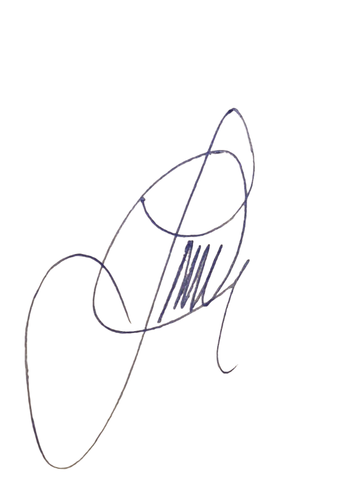

Bienvenido a LavaDuplex
En LavaDuplex, ofrecemos una solución completa para el cuidado de tus prendas más delicadas. Nos especializamos en lavado en seco, planchado y tratamiento de telas, asegurando que tus prendas favoritas siempre se vean impecables. Sabemos lo importante que es la presentación personal y por eso ofrecemos servicios de alta calidad, utilizando los mejores productos del mercado para garantizar que tus prendas se mantengan en perfectas condiciones, como nuevas.
Nos destacamos por nuestra atención al cliente, ofreciendo servicios personalizados que se ajustan a tus necesidades. Ya sea que necesites limpiar un traje formal para una ocasión especial, o simplemente mantener tu ropa de uso diario en perfecto estado, en LavaDuplex nos encargamos de todo.
Además, también proporcionamos servicios de lavandería para empresas, como hoteles, restaurantes y gimnasios, con opciones de recogida y entrega a domicilio para mayor comodidad. Confía en nosotros para mantener tus textiles limpios, frescos y bien cuidados.
¿Por qué elegir LavaDuplex?
- Calidad y Eficiencia: Utilizamos tecnología de punta para garantizar resultados impecables en cada prenda.
- Comodidad: Ofrecemos servicio a domicilio, para que no te preocupes por nada.
- Atención Personalizada: Cada cliente es único, y nos aseguramos de ofrecer soluciones a medida.
- Precios Competitivos: Calidad excepcional a precios accesibles.
No pierdas más tiempo ni dinero en servicios que no cumplen tus expectativas. ¡Visítanos hoy y experimenta el mejor servicio de lavandería y planchado con LavaDuplex!

❮
❯